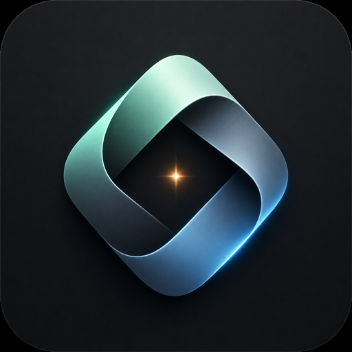

Web Fullstack
Next.js, Tailwind, React state, Node.js, FastAPI, ASP.NET, API contracts, auth, PostgreSQL, SQL tuning, and deploy.
$web-fullstack-app

Universal Builder SkillsCodex skill orchestration pack
Install a complete skill system for fullstack web work, SwiftUI apps, motion, image assets, browser QA, security, Figma, observability, and deployment.
Composable by design
Next.js, Tailwind, React state, Node.js, FastAPI, ASP.NET, API contracts, auth, PostgreSQL, SQL tuning, and deploy.
$web-fullstack-app
Universal SwiftUI app creation, iOS/macOS patterns, Swift style, animation, performance audits, and verification.
$swift-apple-app
UIProMax, Anthropic frontend design, Deno design tooling, interaction design, animation, and image assets.
$anthropic-frontend-design
Playwright, screenshot capture, security best practices, Sentry, Vercel, Netlify, Cloudflare, and Render.
$playwright
Install profiles
Profiles keep the setup lean for narrow workflows, while `all` gives Codex the complete cross-platform builder pack.
./scripts/install.sh all
./scripts/install.sh web
./scripts/install.sh apple
./scripts/install.sh creative
./scripts/install.sh qa
./scripts/install.sh deployBilingual documentation
Prompt recipes